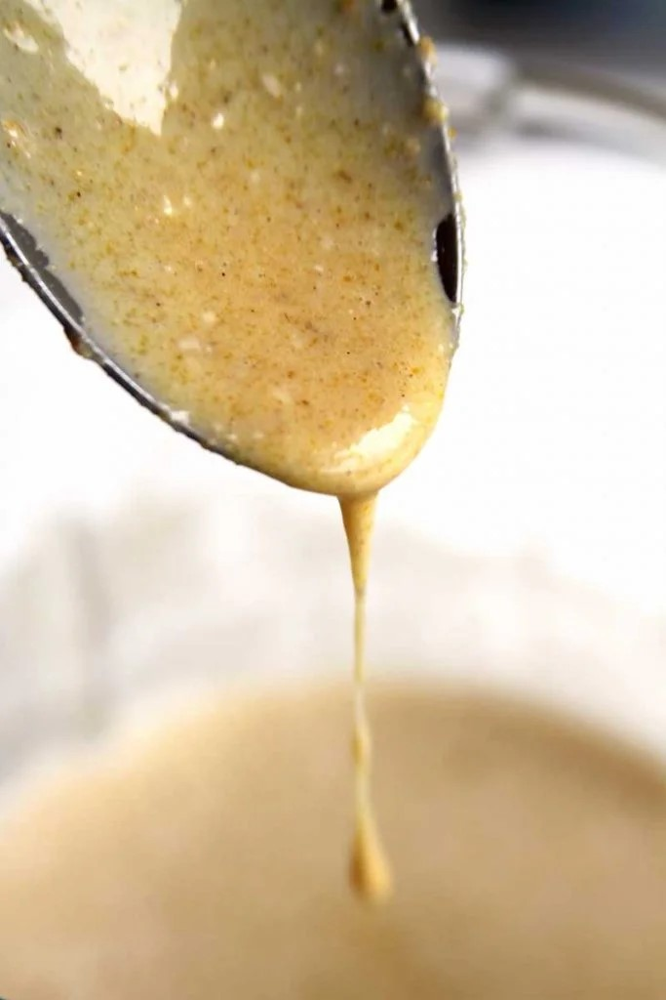
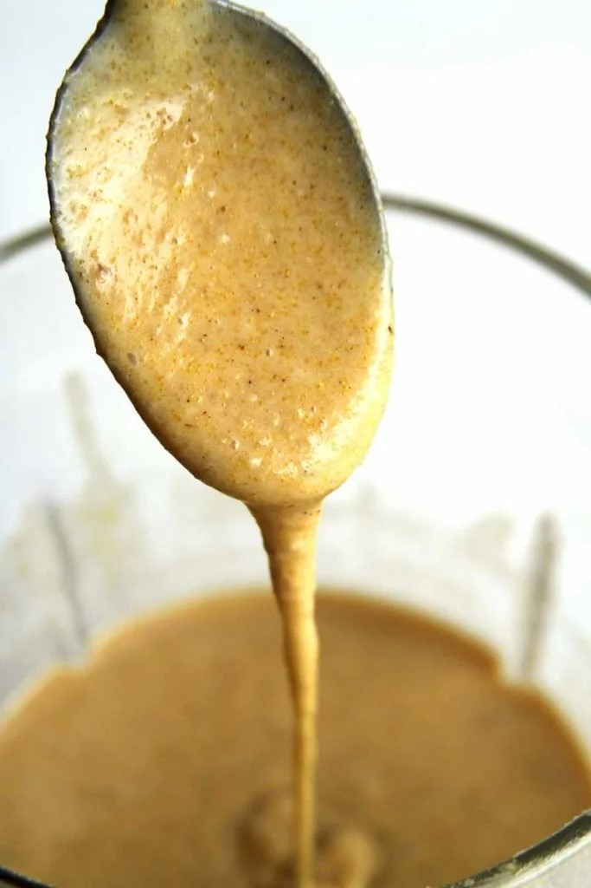

3 ovos inteiros (150 gramas)
1 xícara de leite de coco (240 ml – você pode usar 200 ml leite de coco + 40 ml água)
3/4 xícara de óleo de girassol (180 ml)
1 xícara de fubá fino (140 gramas)
1/2 xícara de polvilho doce (60 gramas)
1/2 xícara de aveia em flocos sem glúten (55 gramas)
1 xícara de açúcar demerara (200 gramas)
Pitada de sal
1 colher de chá de canela (opcional)
1/2 colher de chá de goma xantana
1 colher de sopa de fermento em pó (15 gramas)
1 colher de sopa de sementes de chia (15 gramas – opcional)
A farinha de milho é uma farinha pesada e por isso pra você conseguir fazer em casa um bolo de fubá fofinho você vai precisar usar mais açúcar e mais óleo na receita.
Talvez você não saiba, mas a quantidade de açúcar interfere na maciez do bolo, o açúcar ajuda a dar mais umidade e deixar a textura mais fofinha. O grande problema com o açúcar é que ele não é amigo da Reeducação Alimentar,
Esta é uma receita muito rápida, por isso preaqueça o forno à 180º C e unte uma forma de 22 cm de diâmetro e 8 cm de altura com um pouco de óleo e polvilhe a farinha de milho.
No liquidificador adicione os ovos, o leite de coco, o óleo, o fubá, o polvilho doce, a aveia, o açúcar, o sal e a canela. Bata bem até formar uma massa líquida. Lembre de sempre limpar as laterais do copo com uma espátula para que tudo se misture bem.
Você vai perceber que nesta etapa a massa do bolo de fubá fofinho não está lembrando em nada uma massa de bolo tradicional, está muito mais rala e é por isso que é fundamental adicionar a goma xantana.
Textura antes da goma xantana

Adicione a goma xantana e bata rapidamente, em poucos instantes você vai perceber como a massa fica mais encorpada e agora sim vai estar com cara de massa de bolo, grossinha na medida certa.
Textura após a goma Xantana

Finalize com o fermento em pó e as sementes de chia e agora misture rapidamente utilizando apenas com uma espátula.
Coloque na forma previamente untada e polvilhada com farinha de milho e leve para assar em forno preaquecido à 180º C por aproximadamente 40 minutos ou até que você faça o teste do palito e ele saia limpo.
Deixe o bolo esfriar por completo e depois retire-o da forma passando a faca nas laterais da forma e também no centro.
Os ovos nesta receita não são substituíveis.
Substitua o leite de coco por qualquer leite vegetal.
Você pode usar qualquer óleo, porém o óleo de coco deixará o bolo mais firme.
Quanto mais fina for a moagem da farinha de milho/fubá, melhores serão os resultados na receita.
Substitua o fubá por farinha de Teff.
Substitua o polvilho doce por araruta.
Se você não tiver problemas com o glúten use a aveia comum.
Você pode substituir a aveia por quinoa em flocos, mas a textura ficará mais pesada e menos fofinha.
Você pode substituir o açúcar demerara por qualquer outro açúcar.
Substitua a canela por erva-doce ou baunilha.
A goma xantana é obrigatória e pode ser substituída por goma guar ou CMC na mesma proporção, mas como CMC o bolo fica um pouco mais seco.
Calorias: 183
Açúcares: 14,6g
Gorduras Totais: 5,6g
Gorduras Saturadas: 1 g
Gorduras Insaturadas: 4,3g
Sódio: 2%
Gorduras Trans: 0%
Carboidratos: 10%
Fibras: 8%
Proteínas: 8%
Colesterol: 13%